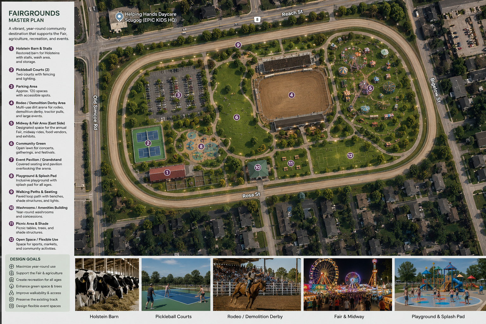

NewsCouncil
Port Perry Fairgrounds discussion deferred to Q1 2027
The deferral creates additional time for public discussion about the future of the property.
Read story →News articles summarize verified events and should link back to official documents wherever possible.

The deferral creates additional time for public discussion about the future of the property.
Read story →Delegates addressed Council and Robert Rock asked questions about the potential taxation revenue associated with the development.
Read story →